Q1541 · the surface redesign · phase one review · 25 September 2026
Every card, one grammar
On 24 September the 🪶 title card showed four faults at once: the tab you pressed turned grey, a block under the rule restated the rule, a 🗑️ offered to put back nothing, and the paper's edge moved when the card opened. You asked for a better design for the cards and the page. This is it — proposed, not built: nothing a member sees has changed.
🪶 Title, settled, opened by the Founder 1600
Today
Proposed
The same card on a phone 390
Today
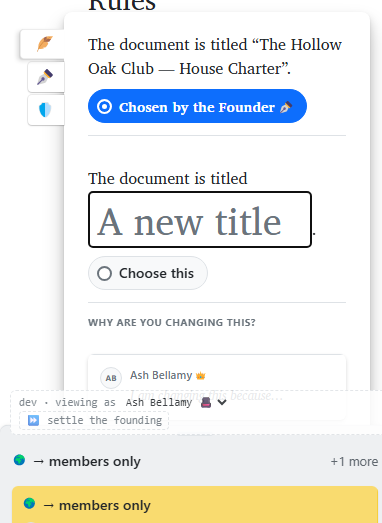
Proposed
🪶 at the birth, before there is a title 1600
Today
Proposed
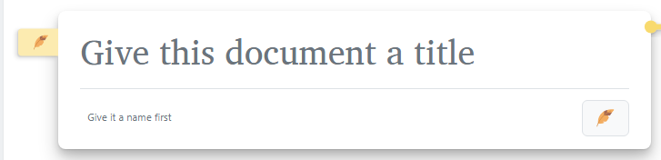
What the audit found
Every card kind was opened in every state it has — 1,336 openings of 37 of the 40 kinds, at 1600 and at 390 — and 1,226 of them (92%) carry at least one fault. The faults fall into ten kinds. By volume the biggest is a fact drawn as a button (who chose a rule, as a pressed blue pill: 490 cards). By severity the worst is a card saying something false: a closed document offering Accept, Send and Save, and a member reading Set to undefined.
92%of card openings carry a fault
33–99 pxthe tab you press drops on every charter card
23shapes of button row, for one rule
388🗑️ with nothing to put back
They come from four causes: the card's frame is drawn whatever it holds; where the document is in its life and who is looking are not given to the card, so each of 40 builders works them out again; one fact has several readers (who chose a rule has three, and they disagree); and two different shells draw the band's cards and the charter's.
The verdict
The proposal answers all four: every card is drawn by one shell from one description of its state, every fact has one home, and a part or a button exists only while it has something in it or a job to do. In the prototype the band's settled cards read clearly better at once; after an adversarial critique and a revision, records, the closed page and the charter's labels are at least as good as today, and the tab you press stops moving. Measured by the same instrument on both pages (below), the prototype passes checks today's page fails hundreds of times.
The honest part. The prototype is a sorter: it rearranges what today's cards already draw. The checks pass against the sorter, and the real build must pass them again. Converting the 40 card bodies is most of the work — BUILD.md estimates 27–32 builder sessions and 10–11 QA rounds. Principle 10 (nothing you are holding is taken by an update) is not built yet. The recommendation is to go ahead in stages: question 1541.1.
28 questions and 15 findings follow. Every answer saves as you choose it; Copy all answers gives the paste-back lines.
The ten principles
Each is a sentence you can hold against a screenshot, and each has a check that measures it.
A card opens in place of the line it is about, and that line stays where it was, word for word, as the card's first line.Four stated exceptions: a record, a patch over several places, a gap, and 🪶 at the birth.
Opening a card moves nothing above it or beside it.The paper, the text column, the tab you pressed and the first line move 0 px, at 1600 and at 390; only what lies below is pushed down.
Every fact on a card has one home.Nothing is said twice, in the same words or in others.
A card shows what this reader can do now.A closed document offers nothing to do but 🥂, and keeps everything it recorded readable.
A control is drawn only while it has a job.A dark one says, in words on the card, what will wake it — a phone has no hover.
An empty part is not drawn, and takes its hairline with it.Hairlines only stand between two things; a card is never taller than what it holds.
A fact is text, a choice is a radio, an act is a button — and each drawing means one thing.Nothing that already happened looks pressable; no button is green.
One button row.🗑️ at the left only when something of yours can be removed, one note in the middle, at most two buttons at the right, one way to acknowledge.
The same thing is drawn the same way everywhere.And every card says what it is about, or what it asks, in one place.
Nothing you are in the middle of is taken by the page updating.A caret, a press, a drag or a half-typed value survives every update. Not built yet — BUILD.md stage 9.
The checks: today against the prototype
Cards failing each check, measured by one instrument on both pages over 352 card openings per run (grammar-audit, a copy of card-audit with the new checks). What the prototype still fails is explained in checks.md: mostly stated exceptions and measurement choices, and 13 bins the sorter cannot judge because it cannot tell a sent choice from an unsent one.
Check
Today 1600
Proposed 1600
Today 390
Proposed 390
Opening moves nothing above or beside the card
185
52
185
52
The first line lands on its paragraph
242
57
242
57
Nothing drawn above the first line
102
0
102
0
A card never covers the line above
120
0
141
0
No padded blank under a card
30
0
24
0
Hairlines only between two things
24
0
24
0
No empty part drawn
232
0
232
0
No control without a job
193
0
193
0
A dark button says why, in words
107
0
107
0
🗑️ only with something to remove
216
13
216
13
Every button row one of six shapes
119
0
119
0
Each drawing means one thing
84
0
84
0
Labels in one place
102
0
102
0
The closed page offers nothing but 🥂
268
0
210
0
The closed page keeps what it recorded
31
0
31
0
No present-tense power on a closed page
10
0
10
0
Nothing floats over text
2
1
1
0
No undefined printed (fixture)
0
0
0
0
Not measured on either page: principle 10 (not built), and six live-only card kinds no fixture opens. No undefined printed reads 0 because the fixture never reaches the one live state that prints it (finding 1541.29).
Questions (1541.1–1541.28)
Genuine choices, most consequential first, the recommended option first. The prototype builds every recommendation.
1541.1Question
Go ahead with phase two: rebuild every card from one shared description of its state
Now. Today each of about 40 kinds of card builds itself. Each one works out for itself whether the document is closed, who is looking, who chose a rule and what to draw, then writes its whole card. That is why the same fault keeps turning up somewhere new — a member reading Set to undefined, a closed document offering Accept, a 🗑️ with nothing to put back — and why every fix so far has covered one card.
Proposed. One shell draws every card from one description of its state: what it is about, who is looking, where the document is in its life, what stands and who chose it, and what this reader may do now. A card can only be drawn from that description, so those faults cannot be written again. Be clear about what the prototype you can click is: it is not that. It takes the markup today's cards already write and sorts it into the new layout. It shows the look, and the checks pass against the sorter; the real build has to pass them again from nothing. Converting the 40 card bodies is most of the work (BUILD.md sizes the whole programme at 27–32 builder sessions and 10–11 QA rounds); the shell, the tokens and the checks are small beside it. And P10 — nothing you are in the middle of is taken by the page updating — is not built in the prototype at all (see 1541.18).
Buys. Every class of fault the diagnosis counted (1,226 of 1,336 opened cards carried at least one) becomes either impossible to build or caught by a check that goes red. New cards are built by filling in one description, not by writing a card.
Costs. Weeks of builder time and a QA round per card family. While a stage is open, other card work in the same six files waits (BUILD.md lists which).
Screenshots (1)The 🪶 card that started this, today and in the prototype
Today
Proposed
1541.2Question
Make the ten principles the surface's standing rules
Now. SURFACE.md states its rules card by card (C1–C17, CP1–CP11, K1–K34 and more). It has no short list a reviewer can hold against a screenshot, and three of its rules contradict each other today: what a closed card's buttons are (K2 against CP9), whether a single-place draft has its own ✏️ (§9 against §9.1), and whether the tab you press moves (C1 against what every charter card does).
Proposed. The ten principles (listed on the review page and in grammar.md §1) go into SURFACE's opening, each naming the automatic check that holds it. The card-by-card rows then state only what is particular to each card.
Buys. A new card is judged against ten sentences, and each sentence has a check that turns red. The three contradictions go, because the answers below settle each of them.
Costs. SURFACE's opening changes. P10 would enter as a rule the page does not yet keep, marked not built until the re-render stage.
1541.3Question
Every card starts with the line it opens in place of
Now. A card replaces the paragraph you pressed, but what stands at its top depends on the kind. A settings card has no head and repeats the rule as its first option — The document is titled "…" over a blue Chosen by the Founder pill. A charter card has a small grey The clause as it stands above the clause. The grants open with their own headings. And about 322 opened cards carry an empty 24 px box above everything.
Proposed. Every card's first line is the paragraph it replaces, drawn by the same code that draws it in the document, word for word, exactly where it stood. What stands leaves the list of options, because it is the first line. Four stated exceptions: a record starts with the wording it recorded; a patch over several places starts with the place it is showing; a gap starts with (no text here); and at the birth, before there is a title, 🪶 starts with the title box itself at title size. A rule's paragraph also carries a line about the Founder's powers; the card leaves that line to the ✒️ 🛡️ cards (1541.10).
The ruling it touches. SURFACE F15 and STYLE T3 — "an option-block settings card carries no head … and a heading-over-text card — the grants and the gates — no title head (Q1151, Q1373)" — and §9's blind-answer row (Q1175) and settled-record row (Q1186, Q1522). Each of these removed a head that restated the card. Your reading (Q1373): no card carries a title. The proposal keeps that: the first line is not a title, it is the line itself.
Buys. Nothing is said twice. The empty head box goes; four ways of drawing a card's top become one; the Set to undefined kind of fault cannot happen, because the first line is the document's own rendering and cannot disagree with it.
Costs. Every band card's first line changes. The grants and gates start with the line their tab hangs on (the Founded line, the Proposals preamble).
Screenshots (3)🪶 settled
Today
Proposed
🌍 settled, the Founder
Today
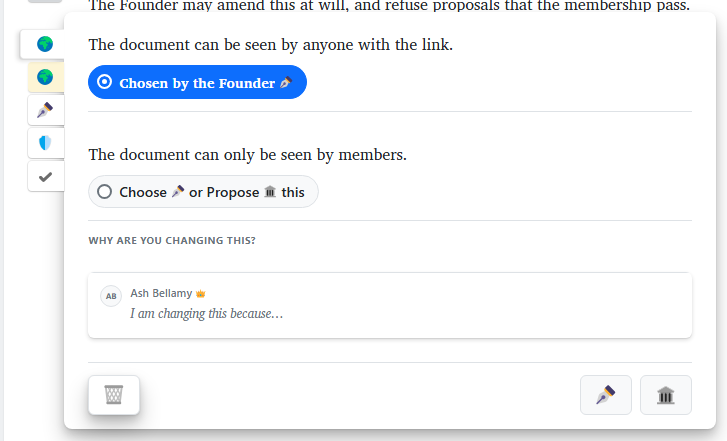
Proposed
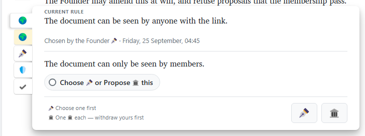
the ✒️ grant
Today
Proposed
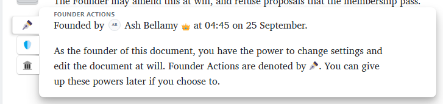
1541.4Question
One place for labels: each block's label is its first line, and the card's own label sits above the first line without moving it
Now. An opened charter card has a small grey The clause as it stands above the clause, which is why the tab you pressed drops 33 px when the card opens (62–84 px on a record, 99 px on the closed page's backlog at 390). Block labels stand in four different places: Proposed above, beside or below its block, Previous text above and to the right, What you proposed at the block's foot. A record opens with a green DECIDED · 7/14 row above the clause.
Proposed. Every block's label is its first line. The card's own label — Current text, Current rule, or how a record ended (Passed · Thursday, 24 September, 22:51, in green) — sits in the space the card's box already takes above its first line. It is still read first, and it moves nothing: the clause lands exactly where the paragraph was, and so does the tab you pressed. One short vocabulary of labels (grammar.md §2.3a lists it: Current text, Current rule, Proposed, What you proposed, Previous text, Rival · n%, Rejected proposal, the outcome words, and a card's ask); a block with no button and no label cannot be built. The first version of the proposal put labels beside radios, which left cards with no radio unlabelled — the critique caught it, and this is the fix.
The ruling it touches. CLAUDE.md's glossary, clause-head: "the clause at document size and colour under an eyebrow"; SURFACE M19, "its head is the eyebrow The gap as it stands"; M12, "a record's head stands a dateline row lower in its card (Q1524 (a))". Kept in substance: Q207 (a first-time reader must be told which paragraph is the current text) and Q1522 (a record says what it did first).
Buys.The tab you click does not move becomes true on the charter, where it is false on every card today. Labels read one way everywhere. Records still lead with their outcome.
Costs.The clause as it stands and The gap as it stands become Current text. A card packed tight under the line above it (📍 at the birth) has room for no label — it has no blocks there, so it needs none. The label costs 4 px in the band (1541.15).
Screenshots (3)a quick judgment
Today
Proposed
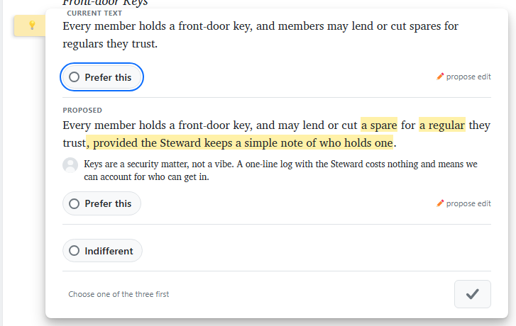
rivals only
Today
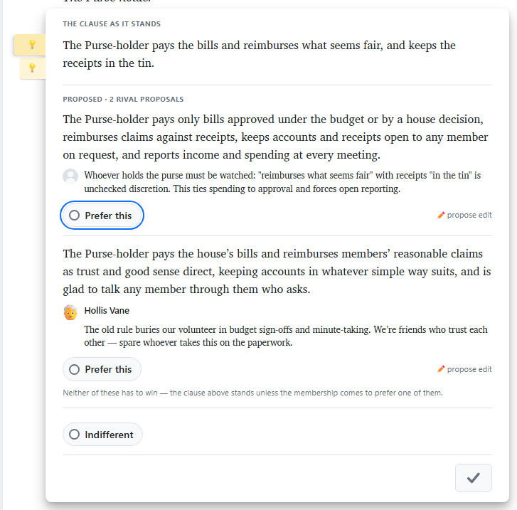
Proposed
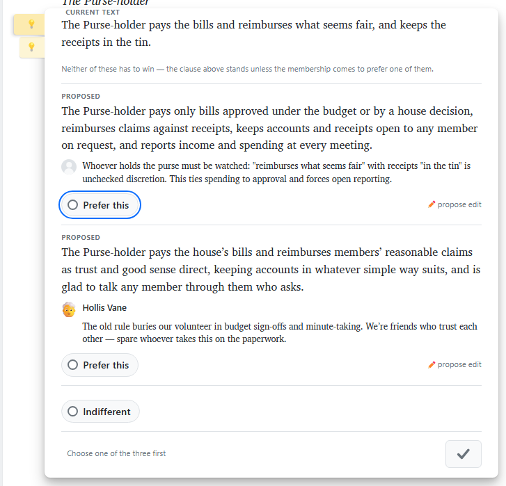
a sealed record
Today
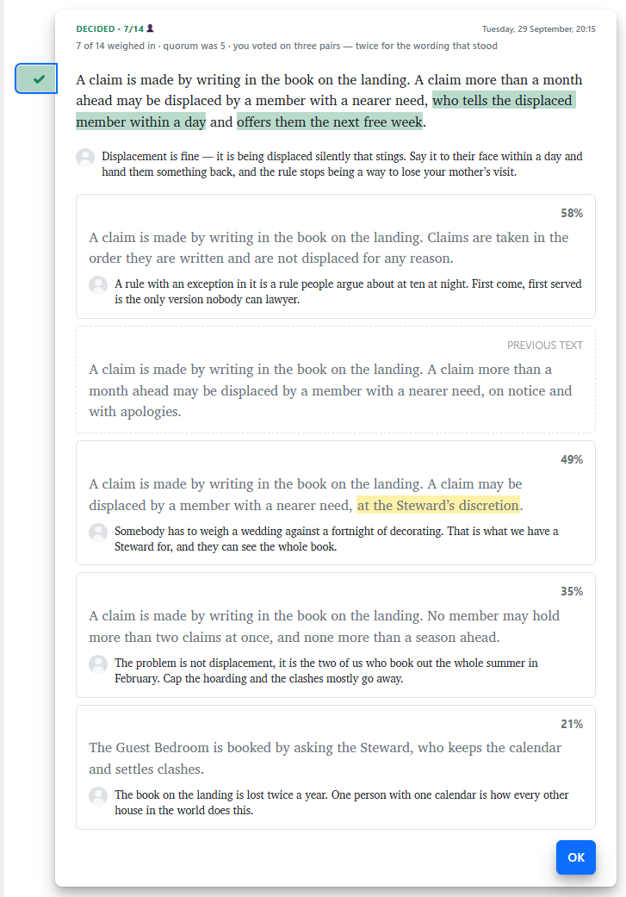
Proposed
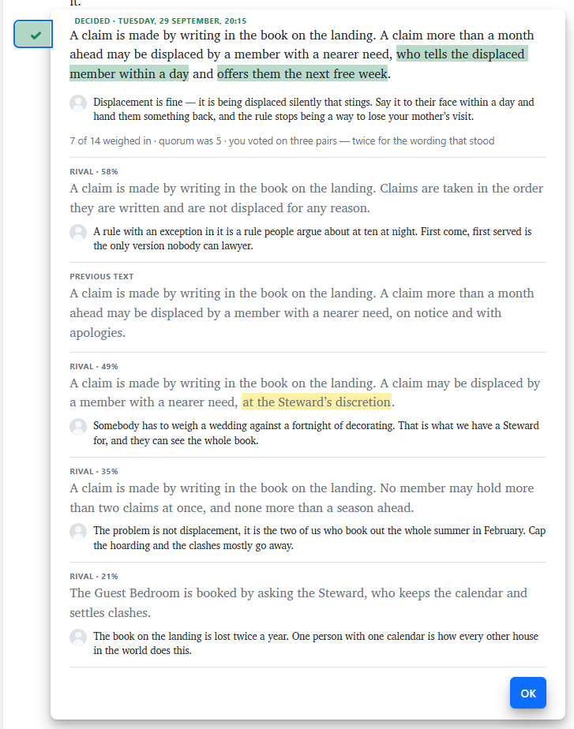
1541.5Question
Who chose a rule is a line of grey text, not a pressed blue button
Now. Under every settled rule a solid blue pill reads Chosen by the Founder ✒️ or Chosen by the membership — drawn exactly like the option you just pressed, and in the same fill as OK. 490 of the opened cards carry one.
Proposed. The same words, verbatim, as one grey line under the rule, with the moment: Chosen by the membership · Sunday, 20 September, 11:12. On a record the outcome stands in for it — Passed is the membership's choice and Changed by the Founder the Founder's — so a record does not print both.
The ruling it touches. SURFACE CP2: "Provenance is a sanctioned third form, and the standing block always wears it (Q1167 (a), Q1176, Q1188 — Ed 2026-09-05)", and STYLE T48's second half. You have confirmed the pill three times. Q1188's reason — a reader should not have to infer who chose a rule from a missing label — is kept: every settled rule still says who chose it, in the same two phrases.
Buys. A fact about the past stops looking like a button you can press, and stops sharing its drawing with OK. It gains its moment.
Costs. It re-draws a ruling you have made three times.
Screenshots (3)🌍 settled
Today
Proposed
🪪 settled
Today
Proposed
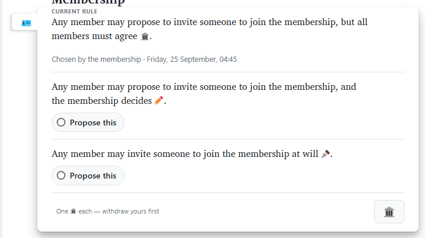
a settled motion record
Today
Proposed
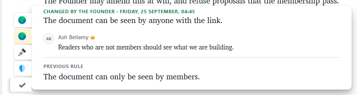
1541.6Question
On a locked or closed card, the settings options nobody can choose are not drawn — but proposals stay
Now. After 🍾 the 🎩 card shows both The Founder is part of the membership (marked Chosen) and The Founder is not part of the membership with a greyed radio. On a closed document every setting still shows its options with Choose this radios, and every race its Prefer this radios.
Proposed. The proposal tells two kinds of block apart. A settings option exists to be chosen, so where this reader cannot choose, the unchosen options are not drawn: what stands is the first line, and who chose it the grey line under it. A proposal, a rival, a record's field, or a race the clock cut off is content, so it stays, labelled (Proposed, Undecided when the document closed), with no radio. (The first version dropped proposals too, and the closed deadlock lost its eight proposals; the revision put them back.)
The ruling it touches. SURFACE CP11: "A block nobody may press keeps its words and greys its radio alone (reading 1193, 2026-09-05): a locked or unavailable option is read as often as a live one"; §8's exception row, "the hat's radios stay visible but disabled post-start".
Buys. No radio anywhere that cannot be pressed. The closed page asks nothing and still shows everything it recorded.
Costs. A locked 🎩 no longer shows the answer that was not chosen. Reading 1193's worry is met differently for the two kinds: a locked option was never something anybody could do; a proposal stays readable.
Screenshots (3)🎩 after 🍾
Today
Proposed
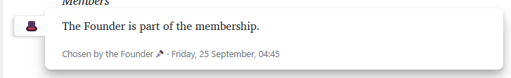
⏱️ on the closed page
Today
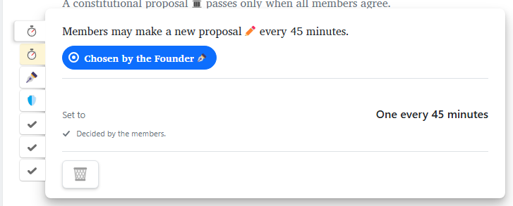
Proposed
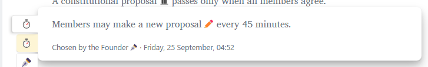
the deadlock on the closed page
Today
Proposed
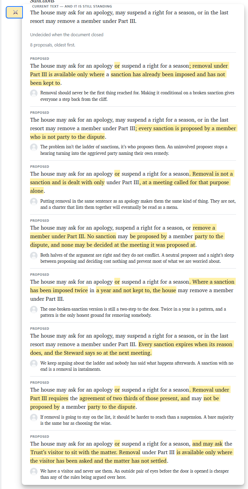
1541.7Question
At the close, 🥂's signature also counts as every OK you still owed
Now. If a record, a park or a news card still owed you an OK when the clock closed the document, it keeps an OK button on the closed page (in the fixture: knives, claims, Nomination, Locking Up, Calling a Meeting) — although the module refuses an OK after the close.
Proposed. 🥂 is the closed page's one act. Its OK signs the document and, in the same press, acknowledges every OK still owed; those rail entries leave with the signature.
Buys. The closed page has one act, as the proposal's closed-document principle says, and no button that the host would refuse.
Costs. A change in the module (packages/constitution) so that the one press answers the owed set, and a full deploy rather than a surface-only one. Not built in the prototype: its cards simply draw no OK, and its rail is today's, so an owed entry still stands there until 🥂.
Screenshots (2)an unread record on the closed page
Today
Proposed
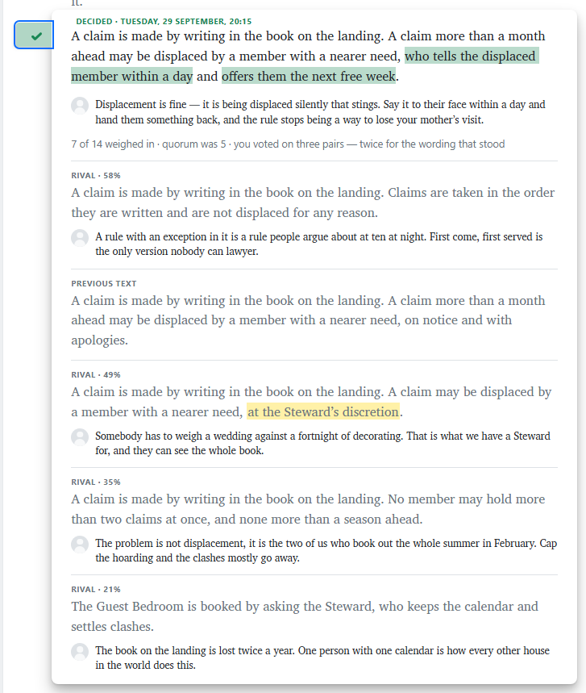
🥂
Today
Proposed
1541.8Question
A card that asks nothing has no buttons; you close it with its tab, a click outside, or Escape
Now. A card with nothing left to do shows a lone OK that only closes it (an accepted grant, a settled 🎩, a settled 🍾, a stranger's read-only card), or, on a closed document, a lone 🗑️. SURFACE says both things: CP9 — never 🗑️ alone, show a close-only OK — and K2 — on a closed document, 🗑️ alone. The page follows K2 on 80 cards.
Proposed. No button row at all. OK appears only when something is owed. You close the card by pressing its tab again, clicking anywhere outside it, or pressing Escape.
The ruling it touches. SURFACE CP9 (reading 1190): "the OK being the reader's way to say they are done with a card that asks nothing"; §9.1's OK row; K2.
Buys. OK means one thing — I have seen this, and I owed it. The K2/CP9 contradiction and the held backlog item (🗑️ alone against §9.1's close-only OK) both go.
Costs. A read-only card has no button. On a phone the way out is tapping the 34 px tab at the screen's edge or tapping elsewhere; BUILD.md measures that exit before this lands.
Screenshots (3)the ✒️ grant, accepted
Today
Proposed
🍾 settled
Today
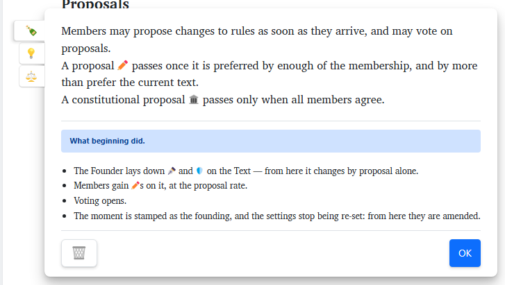
Proposed
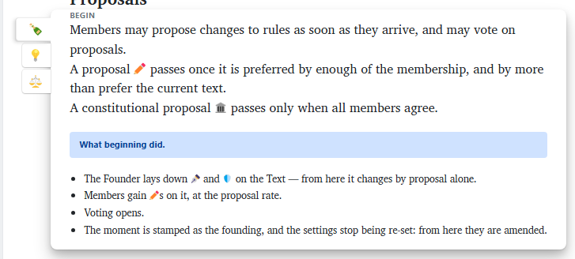
🎩 settled
Today
Proposed
1541.9Question
🗑️ appears only when there is something of yours to remove, and withdrawing says Withdraw
Now. 🗑️ sits at the left of nearly every card, always live. On 388 opened cards it offers to Put it back as it stands with nothing to put back; on 👑 and the park it only closes the card; on your own proposal it is the only control, withdraws the proposal irreversibly, and says so only in its tooltip.
Proposed. 🗑️ is drawn exactly when there is something unsent here that no other control undoes (something typed, uploaded or toggled), or something you sent that can still be withdrawn. A choice among options that include Indifferent needs no bin, since choosing another undoes it — the reason behind Q1500, applied to every card rather than listed by kind. Withdrawing reads 🗑️ Withdraw, because it is irreversible and a bare bin was read as skip (Q1500).
The ruling it touches. SURFACE C4, "🗑️ at the left, always live"; CP7; §9.1's 🗑️ row; CP5 ("🗑️ at the left closes the card, the question kept pending" on 👑); §9's park row.
Buys. 🗑️ has one meaning — remove what is yours — instead of four.
Costs. The bin comes and goes as you start and clear a draft, so the left end of the row is sometimes empty (the buttons on the right do not move).
Screenshots (3)a settled rule: no bin until you type
Today
Proposed
your own proposal: Withdraw
Today
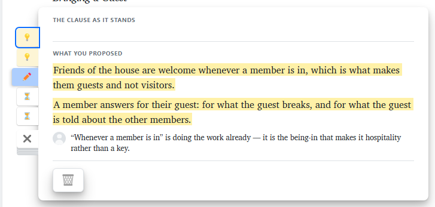
Proposed
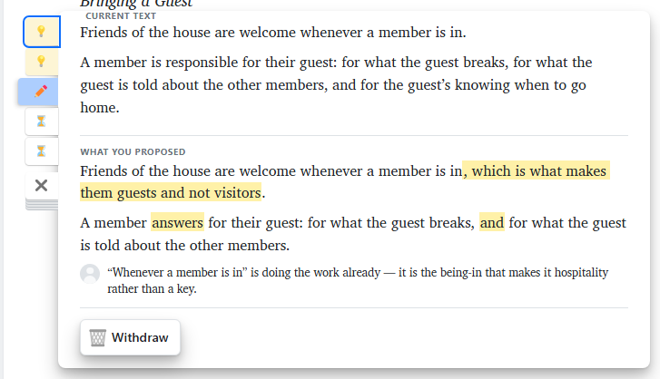
the 👑 question
Today
Proposed
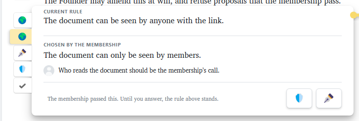
1541.10Question
A settings card starts with the rule alone; the Founder's powers line belongs to the ✒️ 🛡️ cards
Now. In the document a rule reads as two lines: the rule, then The Founder may amend this at will, and refuse proposals that the membership pass. Today's opened card already drops the second line — your ruling of 2026-09-03, in the code: the document keeps the powers; the card drops them. But STYLE §3 still says the opened card's head shows the same two lines.
Proposed. The proposal follows your 2026-09-03 ruling (its first version had quietly overridden it; the critique caught that). STYLE §3's sentence is amended to match. Each power card starts with its own clause of that line (1541.11).
Buys. The first line of a settings card states one fact, and the powers are stated once, on their own cards.
Costs. A STYLE amendment.
Screenshots (2)🪶 settled
Today
Proposed
🌍 settled
Today
Proposed
1541.11Question
A power card starts with that power's own clause, says who holds it, and offers the other state
Now. Pressing ✒️ under ⏱️ opens two options: The Founder may amend the proposal rate at will (marked Chosen) and The Founder may not amend the proposal rate at will. Before 🍾 they are two equal blocks.
Proposed. The first line is the power's own clause (The Founder may amend this at will.); the label above it is the card's question (Can the Founder Make Amendments at Will?); the grey line says who holds the power (Kept by the Founder at the start · ‹when›); the one block is the other state. On a closed document the clause turns to the past: Until the document closed, the Founder could amend this at will.
The ruling it touches. SURFACE K4: "on a power card it stays, marked Chosen, because a two-state toggle needs its other half"; §9's power-cards row, "before 🍾 two proposal blocks".
Buys. A power card is built like every other rule card; K4 needs no exception, and Q1430's doubled sentence cannot come back.
Costs. Before 🍾 the pair reads as first line plus one block rather than two equal blocks.
Screenshots (2)✒️ on 🪶
Today
Proposed
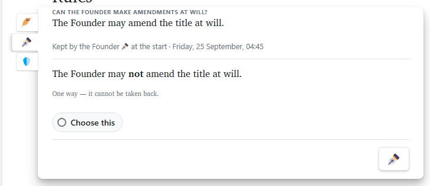
the same, closed
Today
Proposed
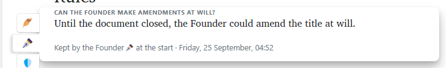
1541.12Question
A card that asks you something says what it asks, as its label
Now. ✋ 🖼️ 📧 and 🌂 keep a title (Choose Your Name) above your row. The grants, gates, 🍾, 🥂 and the power cards have none, or a different form.
Proposed. Every card that is an act or a question — ✋ 🖼️ 📧, 🌂, 🥂, 🍾, the grants, the power cards, 🎩 while it is asked, 👑 — carries its ask as the small label above its first line, and its first line is the place (your row, the Founded line). Cards about a place (a clause, a rule) carry Current text or Current rule instead. The first version dropped the titles altogether; 🌂, the one card whose act cannot be undone, then named no act, so the revision put them back in this form.
The ruling it touches. STYLE T3 and SURFACE F15 keep the personal cards' title — kept. Extending the ask to the grants, 🍾, 🥂, the power cards, 🎩 and 👑 is new.
Buys. Every card says what it is about or what it asks, in one place, drawn one way.
Costs. The ask is small upper-case type. At 390 a long ask is cut with an ellipsis (Can the Founder Make Amendments at W…), its full words on the power card's first line. One note stays amber from the mockups: 🖼️ shows your initials twice, because the Anonymous option shows what choosing it draws.
Screenshots (3)✋
Today
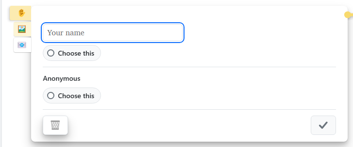
Proposed
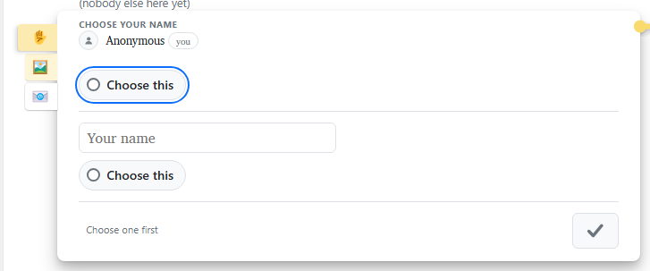
🌂
Today
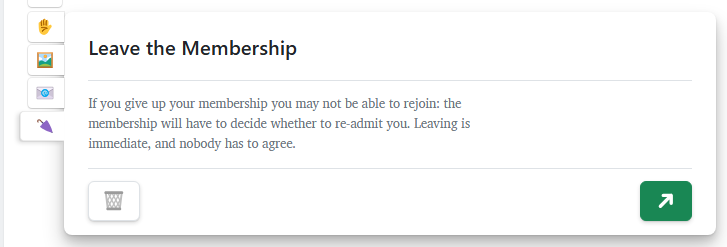
Proposed
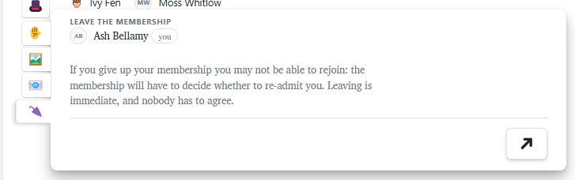
the 🏛️ grant
Today
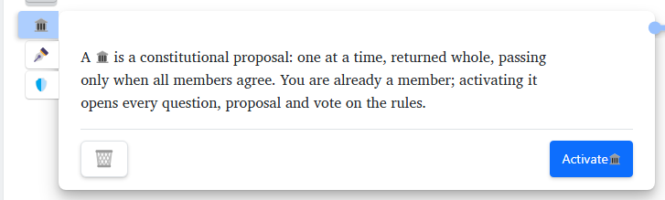
Proposed
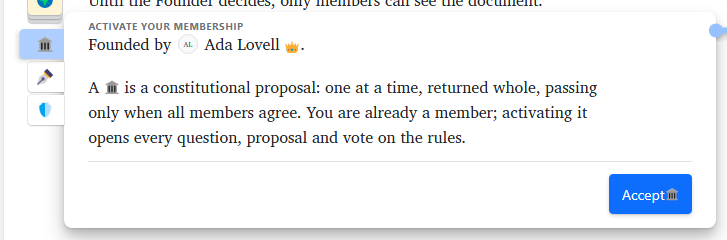
1541.13Question
Each drawing means one thing: ✓ is never green, a chosen option is a dot, a vote on changed wording is a sentence
Now. SURFACE §9.1 calls ✓ "the one solid green on a card" and also says it "lights on --primary when armed"; the recorded ✓ on a judged ⏳ card is green-tinted. A chosen option is a filled blue pill — the same fill as OK and as the provenance pill. A vote about wording that has since changed shows as a pressed Preferred.
Proposed. Green means decided and stays on marks and on the record's passed highlight — never on a button. ✓ is drawn like every other glyph button (flat, lifted when armed). A chosen option is a white pill with a filled dot and blue words; solid blue is OK or Accept, while owed, and nothing else. A vote on wording that has changed is a sentence: You preferred this before it changed.
The ruling it touches. SURFACE §9.1's ✓ row (which contradicts itself).
Buys. Nothing that already happened looks pressable, and no two different things share a drawing. The 👑 Text question's solid green ✒️ (plain bug 8) has nothing left to imitate.
Costs. The ✓ is less emphatic, and every card's selected option looks quieter than today's filled pill.
Screenshots (2)a judged ⏳ pair
Today
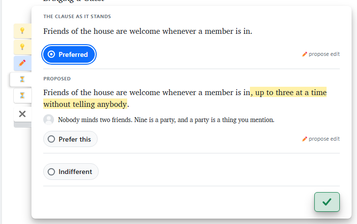
Proposed
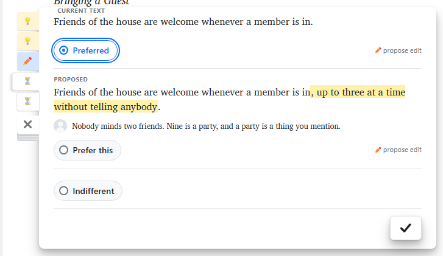
a quick judgment, choosing
Today
Proposed
1541.14Question
The Set to … and Set by … lines go from every card
Now. A member reading a rule may see it three times — the rule, Set to Anyone with the link, and a change line — plus Set by the founder when the document was made. or Decided by the members. That second reader of the same facts is what printed Set to undefined (1541.29) and named two different choosers on one card (1541.31).
Proposed. The rule once (the first line), who chose it and when once (the grey line), and what changing it takes stays in the document's own powers line.
The ruling it touches. SURFACE §9's watching row, "the lockline and the value line only (Q1176)"; STYLE T21's lockline example.
Buys. One home for each fact; the two plain bugs above cannot recur. This also answers a held backlog item (Set to / Set by on every read-only setting card).
Costs. The wording T21 protected, which the paragraph states anyway.
Screenshots (2)🌍 read by a member
Today
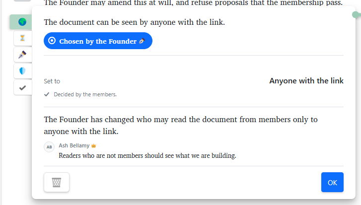
Proposed
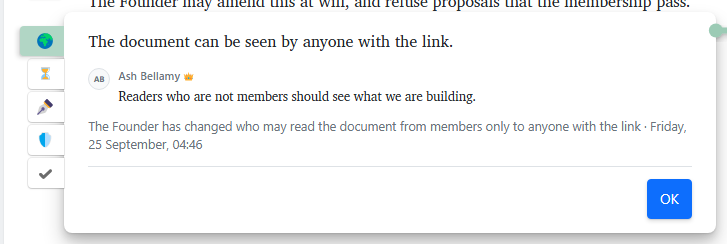
today on a live document: Set to undefined
Today
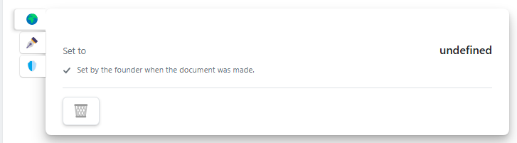
Proposed
Not in the prototype — a live-only or edit-mode card.
1541.15Question
The band's subsection headings gain 4 px so a card's label fits above your row
Now. An opened card's box rises above its first line by its padding, over whatever is above it: at the birth 📍's card covers the descenders of 🪶's title, and 120 cards do this at 1600 (141 at 390).
Proposed. A card rises only into clear space, never over ink. The card's label needs 13 px; the first row under a band subsection heading (✉️'s invitees, ❌, the members list that ✋ 🖼️ 📧 open on) has 11 px. To fit, each band subsection heading gains 4 px of space below it — always, closed page included.
Buys. No card ever covers the line above it, and the label fits everywhere a label is needed.
Costs. 4 px of extra space under the band's subsection headings on every page, card open or not. The charter's headings do not change.
Screenshots (2)the band, no card open
Today
Proposed
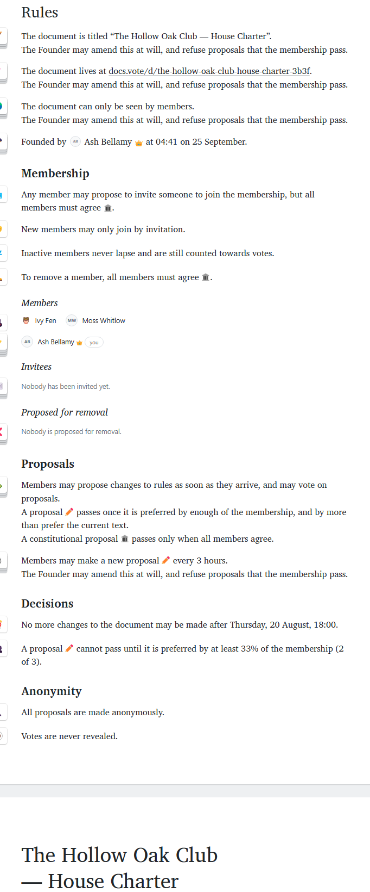
✉️ opened under its heading
Today
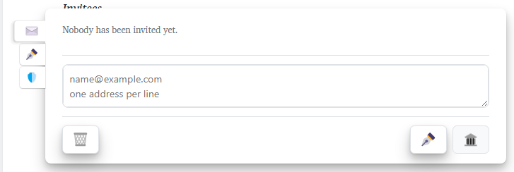
Proposed
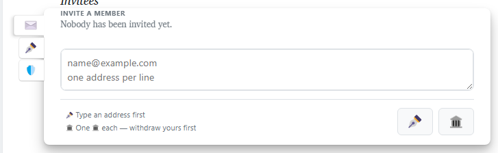
1541.16Question
A card ends where its content ends, and a long tab strip hangs on down the margin
Now. An open card is at least as tall as its strip of tabs, so a card with little in it — a power card on a setting with many records — keeps 60–110 px of blank white under one line (30 cards at 1600).
Proposed. The card ends at its content. Where the strip is longer, it hangs on down the tab margin beside what follows, and pushes what follows down only as far as a closed pile of tabs would.
Buys. No padded cards; the tab you pressed still does not move.
Costs. The strip visibly runs past the card's foot.
Screenshots (1)⏱️, many records in the strip
Today
Proposed
1541.17Question
The floating 📝 may reach over the task rail's empty margin, but never over text
Now. At 1600 the floating 📝 — a 4.5 rem circle whose centre sits on the text sheet's right edge, as you ruled on 2026-09-24 — reaches over the task rail's left edge and covers the foot of its last entry (plain bug 6). Q1518 raised it below 1600; it is true at 1600 too.
Proposed. The first version of the proposal moved the door inside the sheet, overruling you; the revision puts it back where you put it and states a rule instead: the floating layer may cross a zone's edge but never covers a line of text or a control. In the prototype at 1600 it crosses the sheet's edge and the rail's left margin, where no entry text stands — a slight overlap of rail entries' boxes, none of their words.
Buys. Your placement kept, with a check that goes red the day it covers words.
Costs. The door still overlaps the empty edge of a rail entry at some widths.
Screenshots (1)the session page at 1600
Today
Proposed
1541.18Question
Stop the page rebuilding what you are holding: keyed updates instead of wholesale redraws
Now. The page rebuilds each card wholesale on every action and on the 4-second poll. Each time that took something from under someone's hand — a caret, a half-typed date, a held button, a drag — it got its own guard flag. 22 of the 72 surface gotchas in CLAUDE.md are this.
Proposed. Every part of a card gets a stable key, and an update patches only what changed, never replacing something you are holding (focus, a caret, a press, a drag, a typed value). This is principle 10; the prototype does not build it and no check measures it yet.
Buys. The class of fault live rooms have taught hardest stops needing a flag per case.
Costs. The riskiest stage of the build (BUILD.md stage 9); it touches how every card is drawn.
1541.19Question
Where the list of what you may do is worked out: in the page first, the host later
Now. Whether you may propose, judge, set, invite or accept is asked in about 27 separate places in the page, each card its own way, which is how a closed document came to offer Accept.
Proposed. One function in the page answers it for every card, from the existing may checks, with closed inside it.
Buys. The scattered tests go without a server change.
Costs. The page could still offer something the host would refuse; only option (b) closes that.
1541.20Question
On a phone, keep the tab margin but narrow it, so cards get more width
Now. At 390 every card stands 64 px in, with a 20 px right margin; the tab margin is kept (the tab is the only way into a card from the document). Also: your held backlog item the separate cross-width design offer — I read it as the earlier offer to design the phone layout separately. The proposal answers one design, folded: the phone has the same zones, and a card moves 0 px on open at both widths. If you meant something else, say so in the note.
Proposed. The tab margin narrows to the tab's width plus 4 px and the card runs to 12 px from the glass. Not built in the prototype.
Buys. More text width on a phone, and the tab still does not move on open.
Costs. Needs building and measuring (the drawer walk, the narrow card audit).
Screenshots (1)a quick judgment at 390 390
Today
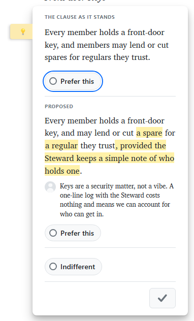
Proposed
1541.21Question
The Why are you changing this? box appears only once you change something
Now. Every settled rule card, ✉️ and the deadlock's desk show an empty reason box before anything has been chosen or typed.
Proposed. The reason box appears with the first keystroke or pick, below the first line, so nothing above moves. A reason still rides every change (CP3).
The ruling it touches. SURFACE §9's composer row, which lists the rationale lane among the card's standing parts.
Buys. No empty box asking why before there is a change.
Costs. The card grows by one box at the first keystroke.
Screenshots (2)🪶 settled
Today
Proposed
the deadlock's desk
Today
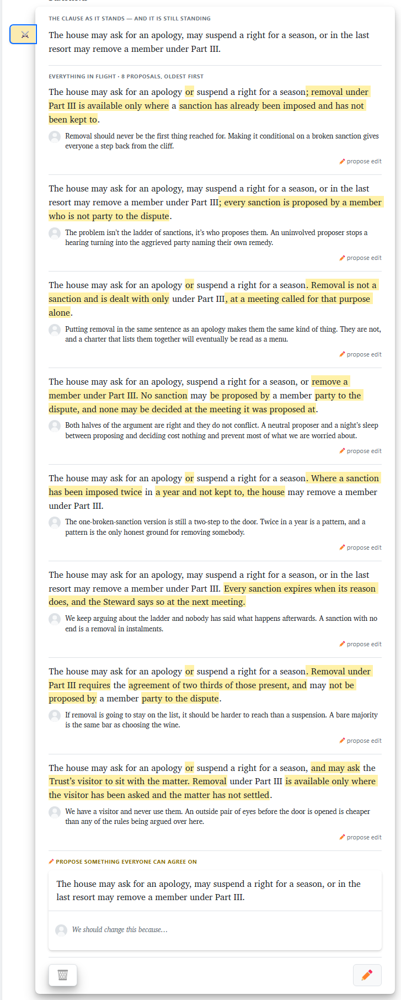
Proposed
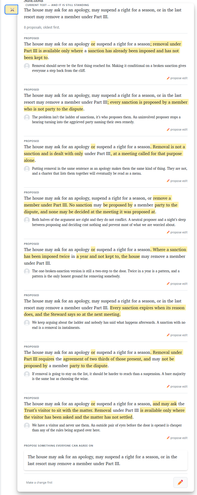
1541.22Question
In edit mode, a single-place draft has one ✏️ — the floating row's
Now. A draft at one place shows 🗑️ ✏️ twice: on its card and on the floating proposal row, which also overlaps the card's foot (plain bug 9). SURFACE says both: §9's editing row, "none on the card — the ✏️ hold is the proposal-row's (Q1382)", and §9.1's ✏️ row, "the same ✏️ drawn on a single-site card" (Q1486 (E)).
Proposed. The card carries no ✏️; the countdown to your next ✏️ stays on the proposal row's ✏️. The overlap is fixed either way (1541.39).
Buys. One act, one button.
Costs. None found.
Screenshots (1)a single-place draft, today
Today
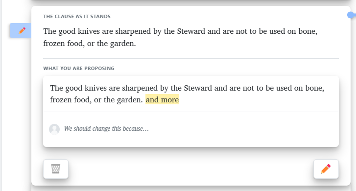
Proposed
Not in the prototype — a live-only or edit-mode card.
1541.23Question
🥂 states the closing moment once
Now. 🥂 says the document closed at 00:51 in its first line and final as of 00:51 in a blue box beneath (plain bug 5).
Proposed. The moment once, in the first line.
The ruling it touches. SURFACE §9's 🥂 row, "final as of · the batch · your closing comment".
Buys. One home for the fact.
Costs. None.
Screenshots (1)🥂
Today
Proposed
1541.24Question
The 🏛️ grant says Accept 🏛️, like the other three
Now. Three grants read Accept ‹glyph›; the 🏛️ grant reads Activate 🏛️ (Q1502), matching its title Activate Your Membership.
Proposed.Accept 🏛️, so one word means I take this power everywhere.
Buys. One word per meaning.
Costs. Q1502's match with the title goes.
Screenshots (1)the 🏛️ grant
Today
Proposed
1541.25Question
An empty invitations or removals list says so in a sentence, in the document and on the card
Now. The band shows (no outstanding invitations) and (nobody proposed for removal); the cards say Nobody has been invited yet. and Nobody is proposed for removal.
Proposed. Since a card's first line is the line itself, the two must match: the band says the sentences.
Buys. The document speaks in sentences, and these two already passed STYLE.
Costs. The band's placeholder look goes.
Screenshots (2)✉️
Today
Proposed
❌
Today
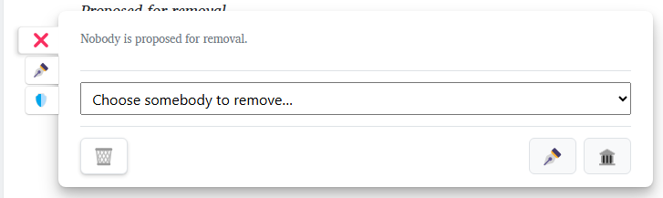
Proposed
1541.26Question
No last changed line on a text clause's card
Now. A charter card says nothing about when its clause last changed; its history is its records' tabs.
Proposed. Unchanged: no such line.
Buys. No line on every judgment card that the reader is not asking for.
Costs. When a clause last changed is a press away, on its record's tab.
1541.27Question
The prototype's new words need a STYLE pass before they ship
Now. The proposal brought words that have not passed STYLE: the label vocabulary (Current text, Current rule, Proposed, What you proposed, Previous text, Rival · 23%, Rejected proposal), the reasons a button is dark (Choose one first, Type an address first, One 🏛️ each — withdraw yours first), Undecided when the document closed, the power clauses in the past tense, You preferred this before it changed, Kept by the Founder at the start. copy-check does not run on the prototype.
Proposed. Whichever you choose, every one of these goes into design/copy.js before a member reads it.
Screenshots (1)Undecided when the document closed
Today
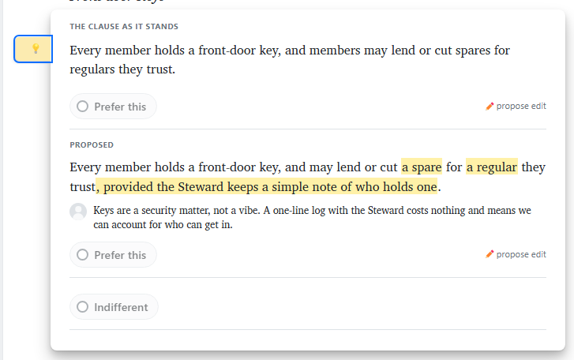
Proposed
1541.28Question
May your name and picture change after the document closes?
Now. On a closed document ✋ still offers ✓ Save. Nothing in SURFACE says whether your name and picture may change after the close; the diagnosis found it and could not call it a bug.
Proposed. Depends on your answer; the prototype draws your row read-only on a closed document.
Screenshots (1)✋ on the closed page
Today
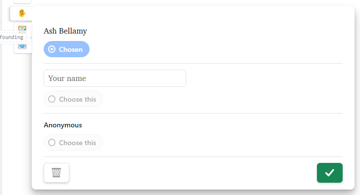
Proposed
Findings (1541.29–1541.43)
Faults in today's page that any design should fix. Each is fixed in the build stage named unless you veto it; (b) brings one forward as a patch now.
1541.29Finding
A member reads Set to undefined on 🌍 and ❌
Now. On a live document before 🍾, a member opening 🌍 in Rules (or ❌ under Proposed for removal) reads Set to undefined; the ❌ card also claims Set by the founder when the document was made for a price the document has not begun under. Plain bug 1: the value is looked up in the Founder's page state, which a member's page does not have.
The fix. The first line is the document's own sentence, so there is no second reader to print undefined; a check fails the build on undefined, NaN, null anywhere on a card.
Settled how. Settled by the grammar (one home per fact; 1541.14). Lands in build stage 3.
Screenshots (1)🌍 read by a member, today
Today
Proposed
Not in the prototype — a live-only or edit-mode card.
1541.30Finding
A closed document still asks you things and offers acts
Now. On a closed document the unaccepted grant offers Accept ✒️ and its strip Activate 🏛️; ✉️ offers ✒️ Send the invitations; ✋ offers ✓ Save; every seat is served the admission card with Prefer this radios; ⏱️'s tabs say waiting on you; the topbar's ✏️ countdown still runs. Plain bugs 2 and 4.
The fix. Where the document is in its life is an input to every card, the tabs and the topbar: on a closed document nothing is offered but 🥂, no tab asks, the ✏️ countdown stops.
Settled how. Settled by the grammar (principle 4; the closed-page check). Lands in build stage 7.
Screenshots (2)the ✒️ grant on a closed document, today
Today
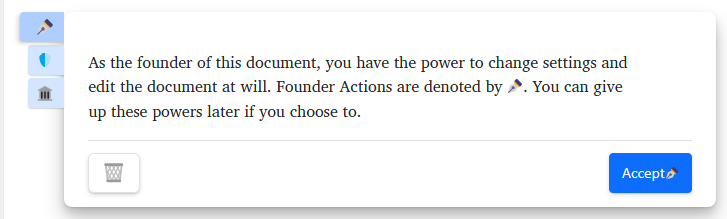
Proposed
Not in the prototype — a live-only or edit-mode card.
the topbar on the closed page, today
Today
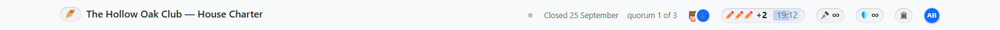
Proposed
Not in the prototype — a live-only or edit-mode card.
1541.31Finding
One card names two different choosers
Now. On the closed fixture's ⏱️ (and ⏰ on a live closing document) the card says Chosen by the Founder ✒️, then Decided by the members., then its latest record Changed by the Founder. Plain bug 3: two functions decide the same fact by different rules.
The fix. One reader for who chose a rule, printed once.
Settled how. Settled by the grammar (one home per fact; 1541.5, 1541.14). Lands in build stage 3.
Screenshots (1)⏱️ on the closed page
Today
Proposed
1541.32Finding
The tab you press drops 33–99 px on every charter card, and the audit looks away
Now.The tab you click does not move holds in the band and fails on every charter card: the tab drops 33 px on a judgment, 62–84 on a record, 82 on a patch, 99 on the closed page's backlog at 390, because the label above the clause pushes it down. The card audit measures only the sideways half, with a comment calling the drop expected.
The fix. The label moves into the card's top space (1541.4); the audit measures both axes, on open, switch and close, at both widths.
Settled how. Settled by the grammar if 1541.4 is taken; the two-axis check is needed either way. Lands in build stage 6.
Screenshots (1)a quick judgment
Today
Proposed
1541.33Finding
A dark button explains itself only in a tooltip, and ✉️'s ✒️ is lit over an empty box
Now. 100 cards' dark buttons say why only on hover — and a phone has no hover (🪶 settled: ✒️ ✏️ both dark, nothing says why). On ✉️ the Founder's ✒️ is lit over an empty address box, a button that changes nothing.
The fix. Each dark button's reason is visible text in the row (Give it a name first; two different reasons print one line each); a button over an empty required box is dark.
Settled how. Settled by the grammar (principles 5 and 8). Lands in build stage 3 onwards.
Screenshots (1)✉️, a member
Today
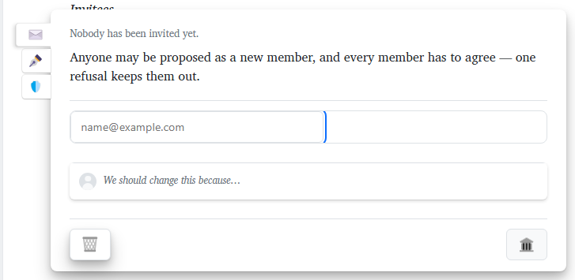
Proposed
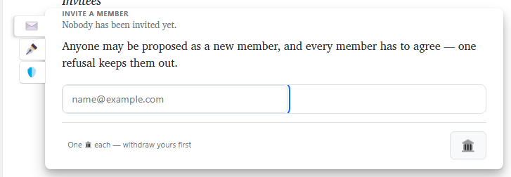
1541.34Finding
The closed page does not say what the clock cut off, and claims powers in the present tense
Now. On the closed page 31 cards whose race or motion was still running show it with live-looking radios and nothing saying it was undecided at the close; 10 power cards say The Founder may amend the title at will on a document that has closed.
The fix. A cut-off race or motion says Undecided when the document closed, its proposals kept and labelled; a power reads Until the document closed, the Founder could ….
Settled how. Settled by the grammar (principle 4). Lands in build stage 7.
Screenshots (2)a judgment on the closed page
Today
Proposed
a power card, closed
Today
Proposed
1541.35Finding
An opened card covers the bottom of the line above it
Now. 120 cards at 1600 (141 at 390) rise over the ink above their paragraph — at the founding ✉️'s card covers 10 px of the line above.
The fix. A card rises only into clear space (the cost is 1541.15).
Settled how. Settled by the grammar (the top-edge rule). Lands in build stage 3 and 6.
Screenshots (1)✉️ at the founding
Today
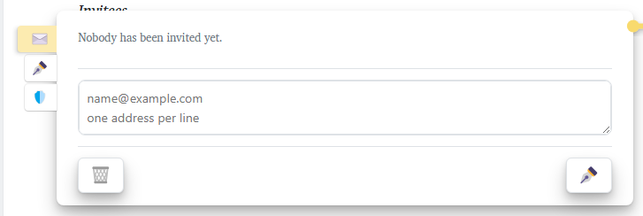
Proposed
1541.36Finding
Empty frames: a head box with nothing in it, and a button row drawn empty under its hairline
Now. About 322 opened cards carry an empty 24 px head box above everything; the closed page's text cards draw an empty button row under a hairline (24 cards — the held backlog item the closed text cards' empty commit row); 232 cards carry some empty part.
The fix. A part with nothing in it is not drawn and takes its hairline with it; hairlines only ever stand between two things.
Settled how. Settled by the grammar (presence and the hairline rule); the backlog item goes. Lands in build stage 1 onwards.
Screenshots (1)a motion card: the empty head box above the rule
Today
Proposed
1541.37Finding
The mover's own motion card draws a radio with no label
Now. On a constitutional motion you moved, the rule as it stands carries an empty ring that does nothing; a screen reader hears an unnamed radio. Plain bug 7.
The fix. A radio exists only where the reader can choose; the mover's card has none, and its one button is 🗑️ Withdraw.
Settled how. Settled by the grammar (a radio only on a live choice). Lands in build stage 4.
Screenshots (1)the mover's motion card
Today
Proposed
1541.38Finding
The 👑 Text question's ✒️ is solid green, and its strip leads with 💡
Now. On a live document the Founder's 👑 question about the Text draws its ✒️ accept in solid green, and the strip's front tab is the race's 💡 rather than 👑. Plain bug 8.
The fix. ✒️ drawn like every glyph button (1541.13); the strip's front tab is the card's own.
Settled how. The green is settled by the grammar; the front tab is a plain fix. Lands in build stage 4.
Screenshots (1)the 👑 Text question, today
Today
Proposed
Not in the prototype — a live-only or edit-mode card.
1541.39Finding
The floating proposal row overlaps a single-place draft's card
Now. In edit mode the floating 🗑️ ✏️ row covers the foot of a single-place draft's card (plain bug 9, its overlap half; which ✏️ survives is 1541.22).
The fix. The floating layer never covers a control or a line of text.
Settled how. Settled by the grammar (the overlay rule). Lands in build stage 8.
Screenshots (1)a single-place draft in edit mode, today
Today
Proposed
Not in the prototype — a live-only or edit-mode card.
1541.40Finding
On a phone, the contents drawer's marks run past its edge
Now. At 390 the lifecycle marks beside the contents drawer's headings run past the drawer's glass, and …8 more is cut. Plain bug 10.
The fix. The marks stay inside the drawer; a check asserts it at 390.
Settled how. A plain fix, guarded by the overlap check. Lands in build stage 8.
Screenshots (1)the contents drawer at 390, today 390
Today
Proposed
Not in the prototype — a live-only or edit-mode card.
1541.41Finding
Type and spacing off the scales
Now. 23 font sizes and 67 spacing values in the stylesheets are off the type scale and the 4 px grid; every card box carries off-grid padding (the audit's S1 sees it 1,408 times).
The fix. Each on a token, or on an allow-list with its reason (the glyph size, the 24 px sockets); a style lint in CI.
Settled how. A check, not the grammar. Lands in build stage 1.
1541.42Finding
The fixture's closed page shows states a real closed document never has
Now. The fixture's closed page still serves 14 unjudged pairs, a park awaiting assent and an open ⏱️ motion — none of which a live closed document produces. The probes and the audits read the fixture, so they measure faults no member can meet (the only surviving orphan hairlines are here).
The fix. The fixture closes the way a live document does.
Settled how. A fixture fix. Lands in build stage 0.
Screenshots (1)the park on the fixture's closed page
Today
Proposed
1541.43Finding
SURFACE's ordinary-motion row still says Keep this
Now. Q1377 changed Keep to Prefer on what stands, because the current rule is a peer of the proposal, and T48 says so; §9's ordinary-motion row still reads Keep this.
The fix. The row reads Prefer this, as the page already does.
Settled how. A SURFACE edit, scheduled with the motions stage. Lands in build stage 4.
Screenshots (1)an ordinary motion
Today
Proposed
The items you held for the redesign (backlog 1541)
Set to / Set by on every read-only setting card — Settled by the grammar — one home per fact; answered through 1541.14. Drop it from the backlog.
The closed text cards' empty commit row (P12's 24) — Settled by the grammar — a part with nothing in it is not drawn, and a closed card has no job; finding 1541.36. Drop it.
🗑️ alone against §9.1's close-only OK — Settled by the grammar — neither survives: no lone 🗑️ (1541.9) and no close-only OK (1541.8). Drop it; your answer to 1541.8 is the ruling.
The separate cross-width design offer — Read as the offer to design the phone separately; the grammar answers one design, folded (the same zones, 0 px on open at both widths). The one open choice is 1541.20, which carries this item. If the offer meant something else, say so there.
The ten plain bugs — 1 → 1541.29; 2 and 4 → 1541.30; 3 → 1541.31; 5 → 1541.23; 6 → 1541.17; 7 → 1541.37; 8 → 1541.38; 9 → 1541.22 and 1541.39; 10 → 1541.40. The eleventh (CLAUDE.md's heading ladder) was fixed on main in 178e0e99.
Every card family, before and after
Today on the left, the prototype on the right. The full set — 80 card pairs and 19 zones at both widths, each captioned — is mockups.html in the prototype's folder.
The five worked cards, at both widths
🪶 Title, settled, read by the Founder🪶 Title, settled, read by the Founder 1600
Today
Proposed
🪶 Title, settled, read by the Founder 390
Today
Proposed
A quick judgment (💡), a memberA quick judgment (💡), a member 1600
Today
Proposed
A quick judgment (💡), a member 390
Today
Proposed
A sealed record (✔)A sealed record (✔) 1600
Today
Proposed
A sealed record (✔) 390
Today
Proposed
A constitutional motion (👤), a member who is not the moverA constitutional motion (👤), a member who is not the mover 1600
Today
Proposed
A constitutional motion (👤), a member who is not the mover 390
Today
Proposed
✉️ Invite, a member, at the all-members price✉️ Invite, a member, at the all-members price 1600
A setting at the foundingA setting at the founding
Today
Proposed
A setting, settledA setting, settled
Today
Proposed
A setting, closed pageA setting, closed page
Today
Proposed
🪶 at the birth🪶 at the birth
Today
Proposed
🪪 Admissions🪪 Admissions
Today
Proposed
🤝 Applications🤝 Applications
Today
Proposed
🎩 Founder's membership🎩 Founder's membership
Today
Proposed
🎩 on the closed page🎩 on the closed page
Today
Proposed
A blind answerA blind answer
Today
Proposed
A power card (✒️)A power card (✒️)
Today
Proposed
A power card, closedA power card, closed
Today
Proposed
Constitutional motion, the moverConstitutional motion, the mover
Today
Proposed
Ordinary motionOrdinary motion
Today
Proposed
👑 question👑 question
Today
Proposed
👑 read by the mover👑 read by the mover
Today
Proposed
Park (⏳)Park (⏳)
Today
Proposed
Failed-motion newsFailed-motion news
Today
Proposed
A grant (🏛️)A grant (🏛️)
Today
Proposed
A grant, accepted (✒️)A grant, accepted (✒️)
Today
Proposed
A gate (💡)A gate (💡)
Today
Proposed
News of a change, read by a memberNews of a change, read by a member
Today
Proposed
🍾 Begin, settled🍾 Begin, settled
Today
Proposed
🥂 Closing🥂 Closing
Today
Proposed
✉️ Invite, the Founder✉️ Invite, the Founder
Today
Proposed
❌ Remove❌ Remove
Today
Proposed
🌂 Leave🌂 Leave
Today
Proposed
The stranger's card (📧)The stranger's card (📧)
Today
Proposed
✋ Your name✋ Your name
Today
Proposed
🖼️ Your picture🖼️ Your picture
Today
Proposed
✋ on the closed page✋ on the closed page
Today
Proposed
The build, in stages
From BUILD.md. SURFACE stays the rule until your answers amend it, and each amendment lands with the stage that changes those cards. Each stage ends with every CI gate and its walks green, the probes re-frozen with their diff read, and a deploy only on your word. The screenshots and the branch itself never reach main — the repository is public; the build brings code and docs only.
0Measure and guardThe new checks in the card audit, reporting today's counts; the fixture's closed page fixed. Nothing a member sees changes. S · 1 session
1One state and one shellCardState and the card shell, the tokens, the STYLE pass on the new words; two read-only cards as pilots. L · 3 sessions, 1 QA
2Read-only and acknowledgement cardsNews, grants, gates, the park, 🍾: OK only while owed, no close-only OK, Accept 🏛️; the four live-only news cards seen for the first time. M · 2 sessions, 1 QA
3The band's settingsSettings, the birth, 🪪 🤝 🎩, power cards, the composer: the first line is the rule, who chose it is text, no Set to. Fixes Set to undefined. XL · 5–6 sessions, 2 QA
4Motions, 👑 and motion recordsRecords lead with their outcome; the mover's unlabelled radio and 👑's green ✒️ go. M · 2–3 sessions, 1 QA
5Doors and people✉️ ❌ 🌂, ✋ 🖼️ 📧, admissions, the applicant's cards: the asks, the 4 px, the empty-list sentences. M · 2 sessions, 1 QA
6The charter's judgment cardsQuick, gap, race, ⏳, deadlock, patch, yours: the tab you press stops dropping; labels in one place; the phone's wider card. L · 3–4 sessions, 1–2 QA
7Records and the closed pageThe closed page offers only 🥂 and keeps everything; 🥂 discharges owed OKs (the one host change, a full deploy). L · 3 sessions, 1 QA
8Edit mode, the rows, the 📝 door, the drawersOverlays never cover text; one ✏️ in edit mode; the phone's contents drawer. M · 2 sessions, 1 QA
9Keyed re-renderNothing you are holding is taken by an update (principle 10); the guard flags retired where a walk proves it. L · 3–4 sessions, 1 QA
10Retire and foldThe old shells deleted; every check strict on every card; SURFACE read end to end. S–M · 1–2 sessions
Open the prototype yourself
In C:\users\edsap\dev\draft-wt-redesign, run npm run design and open the address it prints, then:
/proposal/proto/session-view.html?fixture=session&band=1 — the Hollow Oak session with the Rules unfolded; add &closed=1 for the closed page, or drop the query for the founding.
/proposal/proto/session-view.html?fixture=session — the charter alone. Narrow the window below 900 px for the phone's drawers and task sheet.
/proposal/mockups.html — every pair, captioned, at both widths.
Today's page for comparison: /session-view.html with the same queries.
The prototype lists what it does not build in a panel at its top: the sorter, principle 10, the live-only cards, the unchanged topbar, rails and edit mode, the phone's wider card, and the words that have not passed STYLE.